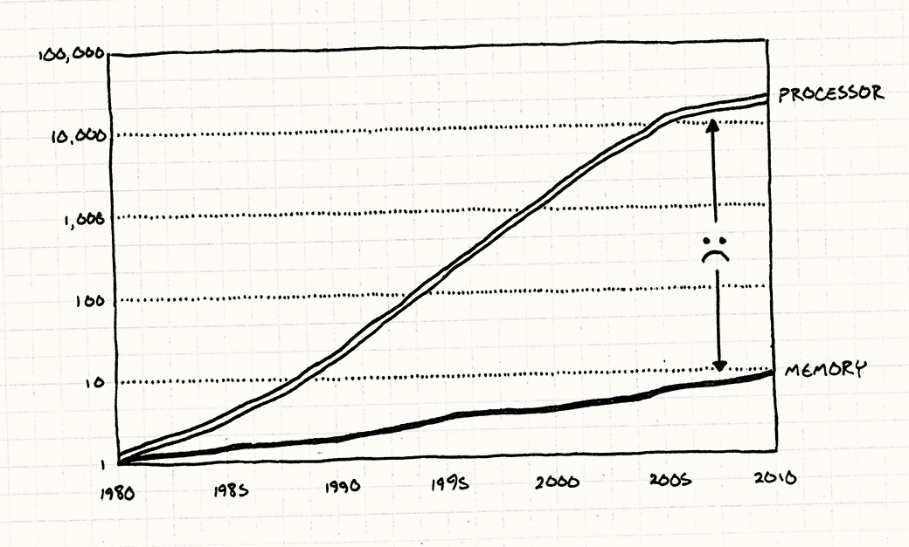

Initial Goals for the Entity Component System
ECS is likely the most widely discussed movement in game engine architecture today. The need for it is usually prefaced with a comparison between CPU speeds and RAM speeds over time where RAM has made pitiful gains over the last thirty years compared to CPU scaling under Moore's law. As a result, high-performance game engine developers have pivoted towards data-oriented design, or writing code to try and have useful data in the CPU's cache at as much as possible. This mitigates wasted CPU cycles spent taking trips to main memory and back. Overwatch is a high-profile example of ECS in a AAA context.
 The disparity between CPU speeds and RAM speeds over time (Robert Nystrom, Game Programming Patterns)
Since Starlight was to prepare us for current trends in the gaming industry, we knew that ECS was going to be at the core of Starlight's game loop. It had to interface with our own memory allocators to ensure linear cache-aware accesses of our components every frame. We needed extensive research and support before even starting work; even then, we did not sufficiently define our rules of engagement before diving in and writing code.
Problems and Solutions
Finding the Right Help
While there are plenty of technical talks like Mike Acton's seminal tirade on data-oriented design that will educate the curious on what ECS is, there are few examples of how an ECS solution should look in an engine. There are a few well-intentioned tutorials that leave out critical details with respect to how components will actually be allocated in memory to guarantee the cache-aware access patterns that we want.
The only good resource that we stumbled into for both explaining ECS and an implementation example was from Rez Graham, a former programmer at EA, in a relatively unknown tutorial series on his YouTube channel. Starlight's ECS implementation would have been nearly impossible without the kickstart that Rez provided by explaining how essential custom allocators were to ensure memory continuity and how systems would be made aware which components they need to iterate on. He also introduced the team to powerful modern C++ techniques such as compile-time string hashing and variadic template metaprogramming.
Systems
Systems in ECS define a set of components that they want to operate on and transform data members in those components only. In effect, if an entity has the precise subset of components that a system cares about, that system will update the entity. Our systems needed a mechanism to define the types they cared about as well as a mechanism to process entities to determine if their list of components satisfied the requirements of the system.
Ideally, systems would define a list of first class type objects like C# or Python offers. C++ is not so friendly - the closest approximation offered comes through templates and template specialization.
Starlight's systems define the list of components they want to operate on via a template parameter pack. Whenever an entity adds a new component, every active system must determine if the entity is now worth caring about and processing for that frame. The core of that is done by iterating through the template parameter pack, a difficult concept to learn that's unlike any collection iteration seen by most junior C++ programmers. We fought against many compilation errors due to the fragile syntax of template parameter pack iteration - the most annoying being an ambiguous function call because our recursive case could not be distinguished from our base case with only two variadic template arguments (recursive cases need three arguments - usually first, second, and "rest of the pack"). It's quite a few recursive function calls to make for simply adding a component, but it is widely known even in well-known engines like Unity to have expensive runtime AddComponent calls, so gameplay programmers know to avoid entity instantiation in performance-sensitive situations.
Once a system determines that it cares about an entity, a tuple of pointers to all of that one entity's relevant components are appended to a vector for that system to iterate through every frame.
Components
Components in ECS are meant to be as lightweight as possible in order to fit as many of them into the cache at once. This is made possible by making most members POD (plain old data) types and avoiding pointer members - every chased pointer will likely cause a cache miss and a main memory hit.
Starlight Components have three static unique IDs to aid in bookkeeping:
UniqueID: For comparing and identifying Component types, for example determining if two types from a template parameter pack are the same. Our guidelines have these generated by a string hash on the class name.EngineMemoryID: Our engine keeps track of allocated components in a jagged 2D vector where each row is a Component type, and each entry in a row is a pointer to an allocated Component of that type. EngineMemoryID is a component's row index in the 2D vector.IndexInCompVector: Per-instance column index for this component type's row in the engine's 2D vector.
Entities
Entities in ECS are supposed to be the most lightweight object in the entire engine - just an unsigned integer. However, we needed to make a small architecture decision for an entity to know which components it had. We decided to go with simplest implementation instead of strict ECS adherence, partially to avoid another ID mess that Components became.
So while entities are still uniquely identifiable by an unsigned integer that increments up from 0 with each created entity, they also have an unordered map of Component::UniqueID to Component*. This allows for the simplest way to look up a component from the frequently called Entity::GetComponent function. However, we lose a bit of performance whenever an entity is destroyed as we iterate through the entity's unordered map to deallocated all components that belong to it. It's an acceptable to make the common case fast - DestroyEntity doesn't happen every frame for every entity and almost all commercial engines establish the operation as runtime expensive.
Deliverable
In the end, our entity component system is moderately easy to use but not nearly as dead-simple as Unity's C# behavior scripting. We don't know if this is a byproduct of ECS as a new and nebulous architecture or a reflection of our abilities as novice engine programmers. Given that ECS is the main interface by which programmers define their game's behavior, it will definitely require a paradigm shift for anyone building a game to learn the ins-and-outs of the architecture.
For any first-time engine developer following in our stead, we suggest emulating an architecture that they are already familiar with from prior game development experience like Unity's pure component system or Unreal 4's actor-component system. After building out a chosen architecture and building a simple game, profile to determine if performance is meaningfully bottlenecked by the model that you chose. If so, it might make sense to reinvent the engine in a second pass with ECS. This method is the fastest way to move your engine from disconnected subsystems to a playable game, which is probably the best goal for a first engine.
We suggest this because of the layered complexity of researching a cutting-edge architecture and its rules, implementing it, then building gameplay and rendering behaviors into it was an exhausting process for our first game engine. There were many times where it felt like our game code was dogmatically constrained by the rules of ECS with the little we have been told about it. For example, our game's startup code was quickly littered with default-constructed components allocated by AddComponent having their members initialized to real data by stack-allocated components by using static System functions because Components are not supposed to have member functions.
Another downside of the complexity of ECS is that it pushed our playable game into the last month of engine development. This meant that when we discovered an non-scalable hiccup for gameplay programming, like missing elegant system-to-system communication, there was not enough time to add it and we resorted to inflexible methods for the sake of shipping the engine.
ECS's strength is in games with a ton of entities like moving projectiles or swarms of enemies, but we found performance drops on a budget laptop at around 70 actively moving projectiles. Given more time, we would have loved to attach a profiler to our engine to determine where the performance bottleneck was and optimize our systems to use ECS to its full potential.
Helpful Resources
Overwatch Gameplay Architecture and Netcode - Tim Ford
Entity Component System tutorials - Rez Graham